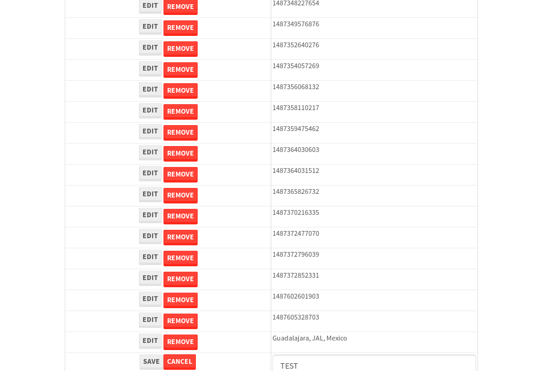

tbColumn.Grid Sorting - 33.891sTests: 5Skipped: 0Failures: 0 should sort data in ascending order then on descending order when sorting by Order Id column - 7.75sTests passed: 100.00%should order data in ascending order when click-sorting an unsorted text column - 5.89sTests passed: 100.00%should order data in descending order when click-sorting an ascending-sorted text column - 6.37sTests passed: 100.00%should order data in ascending order when click-sorting an unsorted date column - 7.254sTests passed: 100.00%should order data in descending order when click-sorting twice an unsorted date column - 6.624sTests passed: 100.00%
tbColumn.Grid Components - 5.698sTests: 3Skipped: 0Failures: 0 should print grid - 2.311s***Skipped***Tests passed: 0%should export grid - 1.688s***Skipped***Tests passed: 0%should show column selector - 1.699sTests passed: 100.00%
tbSingleForm.Form validations - 3.205sTests: 2Skipped: 0Failures: 0 should have an empty required field - 1.735sTests passed: 100.00%should not be able to click on save - 1.47sTests passed: 100.00%
Tubular Filters.tbColumnFilter - 120.054sTests: 12Skipped: 0Failures: 0 should cancel filtering when clicking outside filter-popover - 10.834sTests passed: 100.00%should disable Value text-input for "None" filter - 7.414sTests passed: 100.00%should disable apply button for "None" filter - 7.193sTests passed: 100.00%should decorate popover button when showing data is being filtered for its column - 12.368sTests passed: 100.00%should correctly filter data for the "Equals" filtering option - 9.23sTests passed: 100.00%should correctly filter data for the "Not Equals" filtering option - 9.797sTests passed: 100.00%should correctly filter data for the "Contains" filtering option - 10.791sTests passed: 100.00%should correctly filter data for the "Not Contains" filtering option - 10.667sTests passed: 100.00%should correctly filter data for the "Starts With" filtering option - 7.98sTests passed: 100.00%should correctly filter data for the "Not Starts With" filtering option - 7.526sTests passed: 100.00%should correctly filter data for the "Ends With" filtering option - 7.456sTests passed: 100.00%should correctly filter data for the "Not Ends With" filtering option - 7.386sTests passed: 100.00%
Tubular Filters.tbColumnDateTimeFilter - 143.855sTests: 12Skipped: 0Failures: 0 should cancel filtering when clicking outside filter-popover - 7.845sTests passed: 100.00%should disable Value text-input for "None" filter - 7.414sTests passed: 100.00%should disable apply button for "None" filter - 7.078sTests passed: 100.00%should clear filtering when clicking on Clean button - 18.594sTests passed: 100.00%should decorate popover button when showing data is being filtered for its column - 12.507sTests passed: 100.00%should correctly filter data for the "Equals" filtering option - 6.791sTests passed: 100.00%should correctly filter data for the "Not Equals" filtering option - 7.689sTests passed: 100.00%should correctly filter data for the "Between" filtering option - 13.978sTests passed: 100.00%should correctly filter data for the "Greater-or-equal" filtering option - 13.021sTests passed: 100.00%should corretlly filter data for the "Greater" filtering option - 13.891sTests passed: 100.00%should correctly filter data for the "Less-or-equal" filtering option - 12.191sTests passed: 100.00%should correctly filter data for the "Less" filtering option - 11.967sTests passed: 100.00%
Tubular Filters.tbColumnOptionsFilter - 82.442sTests: 3Skipped: 0Failures: 0 should cancel filtering when clicking outside filter-popover - 9.499sTests passed: 100.00%should decorate popover button when showing data is being filtered for its column - 12.061sTests passed: 100.00%should filter column-elements in accordance to the selected filter when selecting a single option - 49.415sTests passed: 100.00%
Tubular Filters.tbTextSearch - 49.653sTests: 5Skipped: 0Failures: 0 min-chars is not set - 1.096sTests passed: 100.00%should filter data in searchable-column customer name to matching inputted text, starting from 3 characters - 6.904sTests passed: 100.00%should filter data in searchable-column shipper city to matching inputted text, starting from 3 characters - 12.305sTests passed: 100.00%should show clear button when there is inputted text only - 6.831sTests passed: 100.00%should clear filtering when clicking clear button - 16.921sTests passed: 100.00%
tbForm related components.tbCheckboxField - 7.038sTests: 2Skipped: 0Failures: 0 should save changes on "SAVE" - 3.19sTests passed: 100.00%should discard changes on "CANCEL" - 2.371sTests passed: 100.00%
tbForm related components.tbDropDownEditor - 15.274sTests: 5Skipped: 0Failures: 0 should set initial input value to the value of "value" attribute when defined - 2.681sTests passed: 100.00%should show the component name value in a label field when "showLabel" attribute is true - 2.225sTests passed: 100.00%should show a help field equal to this attribute, is present - 1.973sTests passed: 100.00%should submit modifications to item/server when clicking form "Save" - 4.608sTests passed: 100.00%should NOT submit modifications to item/server when clicking form "Cancel" - 2.815sTests passed: 100.00%
tbForm related components.tbTextArea - 19.196sTests: 7Skipped: 0Failures: 0 should set initial input value to the value of "value" attribute when defined - 2.311sTests passed: 100.00%should be invalidated when the number of chars is not in the range of "min" and "max" attributes - 3.602sTests passed: 100.00%should show the component name value in a label field when "showLabel" attribute is true - 2.072sTests passed: 100.00%should show a help field equal to this attribute, is present - 2.383sTests passed: 100.00%should require the field when the attribute "required" is true - 2.302sTests passed: 100.00%should submit modifications to item/server when clicking form "Save" - 3.244sTests passed: 100.00%should NOT submit modifications to item/server when clicking form "Cancel" - 2.474sTests passed: 100.00%
tbForm related components.tbDateEditor - 14.648sTests: 6Skipped: 0Failures: 1 should set initial date value to the value of "value" attribute when defined - 1.869sTests passed: 100.00%should be invalidated when the date is not in the range of "min" and "max" attributes - 2.244sTests passed: 100.00%should show the component name value in a label field when "showLabel" attribute is true - 2.152sTests passed: 100.00%should show a help field equal to this attribute, is present - 2.487sTests passed: 100.00%should submit modifications to item/server when clicking form "Save" - 2.7sExpected false to be true.✗Tests passed: 0.00%should NOT submit modifications to item/server when clicking form "Cancel" - 2.175sTests passed: 100.00%
tbForm related components.tbTypeaheadEditor - 19.076sTests: 7Skipped: 0Failures: 0 should show an options list when there is an API-info/component entered-data - 2.613sTests passed: 100.00%should select the option clicked - 2.976sTests passed: 100.00%should show a "delete" button when an option/match is selected, and delete the option if button is clicked - 2.727sTests passed: 100.00%should show a label value equal to the component name when "showLabel" attribue is true - 1.766sTests passed: 100.00%should require a value when "require" attribute is true - 2.428sTests passed: 100.00%should submit modifications to item/server when clicking form "Save" - 3.632sTests passed: 100.00%should NOT submit modifications to item/server when clicking form "Cancel" - 2.253sTests passed: 100.00%
tbForm related components.tbSimpleEditor - 25.757sTests: 9Skipped: 0Failures: 0 should set initial input value to the value of "value" attribute when defined - 2.744sTests passed: 100.00%should be invalidated when the number of chars is not in the range of "min" and "max" attributes - 3.703sTests passed: 100.00%should show the component name value in a label field when "showLabel" attribute is true - 1.972sTests passed: 100.00%should set input placeholder to the value of "placeholder" attribute - 2.747sTests passed: 100.00%should validate the control using the "regex" attribute, if present - 2.632sTests passed: 100.00%should show a help field equal to this attribute, is present - 2.324sTests passed: 100.00%should require the field when the attribute "required" is true - 2.347sTests passed: 100.00%should submit modifications to item/server when clicking form "Save" - 3.734sTests passed: 100.00%should NOT submit modifications to item/server when clicking form "Cancel" - 2.862sTests passed: 100.00%
tbForm related components.tbNumericEditor - 18.611sTests: 7Skipped: 0Failures: 0 should set initial component value to the value of "value" attribute when defined - 1.557sTests passed: 100.00%should be invalidated when the entered number is not in the range of "min" and "max" attributes - 2.919sTests passed: 100.00%should show the component name value in a label field when "showLabel" attribute is true - 1.811sTests passed: 100.00%should show a help field equal to this attribute, is present - 1.942sTests passed: 100.00%should require the field when the attribute "required" is true - 2.549sTests passed: 100.00%should submit modifications to item/server when clicking form "Save" - 4.399sTests passed: 100.00%should NOT submit modifications to item/server when clicking form "Cancel" - 2.764sTests passed: 100.00%
tbForm Connection Error NoModelKey - 3.251sTests: 1Skipped: 0Failures: 0 tbForm connection error functionality - 0.699sTests passed: 100.00%
tbForm Connection Error NoServerUrl - 3.063sTests: 1Skipped: 0Failures: 0 tbForm connection error functionality - 0.761sTests passed: 100.00%
tbGridComponents - 36.298sTests: 6Skipped: 0Failures: 4 should add item with newRow method - 4.729sExpected 'EDIT REMOVE TEST' not to be 'EDIT REMOVE TEST'.✗Tests passed: 50.00%should add item with newRow method and cancel action - 1.009sTests passed: 100.00%should update item with tbSaveButton - 1.851sExpected '' to be 'TEST'.✗Tests passed: 0.00%should NOT update item on cancel Update action - 1.167sFailed: ElementNotVisibleError✗Tests passed: 0.00%should remove item with tbRemoveButton - 22.113sExpected 58 not to be 58, 'should remove the row from the table'.✗Tests passed: 50.00%should NOT remove item on cancel Remove action - 1.657sTests passed: 100.00%
tbGridPager.navigation buttons - 9.763sTests: 1Skipped: 0Failures: 0 should perform no action when clicking on the numbered navigation button corresponding to the current-showing results page - 1.467sTests passed: 100.00%
tbGridPager.navigation buttons.first/non-last results page related functionallity - 4.329sTests: 2Skipped: 0Failures: 0 should disable "first" and "previous" navigation buttons when in first results page - 1.737sTests passed: 100.00%should enable "last" and "next" navigation buttons when in a results page other than last - 2.591sTests passed: 100.00%
tbGridPager.navigation buttons.last/non-first results page related functionallity - 3.967sTests: 2Skipped: 0Failures: 0 should disable "last" and "next" navigation buttons when in last results page - 2.146sTests passed: 100.00%should enable "first" and "previous" navigation buttons when in a results page other than first - 1.821sTests passed: 100.00%
tbGridPager.page navigation - 8.159sTests: 5Skipped: 0Failures: 0 should go to next results page when clicking on next navigation button - 1.47sTests passed: 100.00%should go to previous results page when clicking on previous navigation button - 2.172sTests passed: 100.00%should go to last results page when clicking on last navigation button - 1.52sTests passed: 100.00%should go to first results page when clicking on first navigation button - 1.585sTests passed: 100.00%should go to corresponding results page when clicking on a numbered navigation button - 1.412sTests passed: 100.00%
tbGridPagerInfo - 5.107sTests: 2Skipped: 0Failures: 0 should show text in accordance to numbered of filter rows and current results-page - 1.651sTests passed: 100.00%should show count in footer - 0.679sTests passed: 100.00%
tbHttp - 19.586sTests: 8Skipped: 1Failures: 0 should be authenticated - 4.09sTests passed: 100.00%retrieve data - 2.386sTests passed: 100.00%should not login bad credentials - 2.428sTests passed: 100.00%should have a refresh token - 2.524sTests passed: 100.00%should remove authentication - 2.406sTests passed: 100.00%get method-Is not authenticated - 2.719sTests passed: 100.00%post method-Is not authenticated - 3.033sTests passed: 100.00%should regenerate access token on post - 0s***Skipped***Tests passed: 0%
tbPageSizeSelctor - 10.625sTests: 4Skipped: 0Failures: 0 should filter up to 10 data rows per page when selecting a page size of "10" - 2.85sTests passed: 100.00%should filter up to 20 data rows per page when selecting a page size of "20" - 1.551sTests passed: 100.00%should filter up to 50 data rows per page when selecting a page size of "50" - 2.153sTests passed: 100.00%should filter up to 100 data rows per page when selecting a page size of "100" - 1.757sTests passed: 100.00%
tbRowSelectable - 11.565sTests: 2Skipped: 0Failures: 0 selected rows - 5.312sTests passed: 100.00%unselected rows - 4.307sTests passed: 100.00%
tbSingleForm - 23.573sTests: 8Skipped: 0Failures: 1 should load correct info - 2.751sTests passed: 100.00%should change customer name - 3.139sTests passed: 100.00%should save it - 4.145sFailed: Element is not enabled✗Tests passed: 0.00%should clear the inputs - 2.52sTests passed: 100.00%should update - 3.242sTests passed: 100.00%should reset editor - 2.5sTests passed: 100.00%should not save if not Changes - 2.396sTests passed: 100.00%should not be able to click on save - 2.88sTests passed: 100.00%


{kind=link}